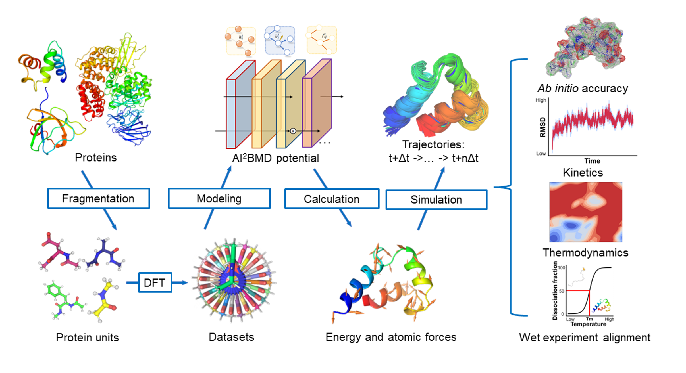
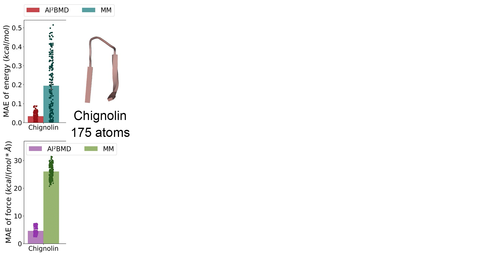
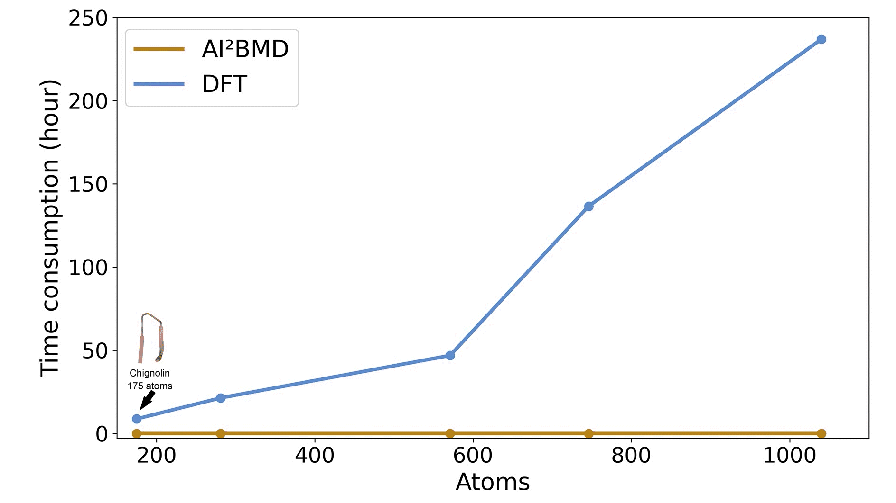

AI-powered Molecular Dynamics Simulation

AI-powered MD is a generalizable solution to efficiently simulate various proteins with ab initio accuracy. A generalizable protein fragmentation approach splits proteins into overlapped protein units. Simulations are performed by the AI2BMD simulation system while in each simulation step, the potential based on ViSNet calculates the energy and atomic forces for the protein with ab initio accuracy. By comprehensive analysis from both kinetics and thermodynamics, it exhibits good alignments with wet-lab experiment data such as the melting temperature of fast folding proteins and different phenomenon compared with molecular mechanics.
Highlight of features
-
AI-powered MD provides ab initio accuracy calculation for both potential energy and atomic forces and has surpassed the conventional molecular mechanics by a large margin.

-
AI-powered MD has displayed a dramatic reduction in time complexity or computational time.

-
AI-powered MD can execute free energy estimation of proteins, leading to reasonable predictions of protein folding thermodynamics.

-
AI-powered MD excels in deducing conformational space exploration and protein dynamics, exhibiting its competency to bridge the discrepancy between simulations and experiments.